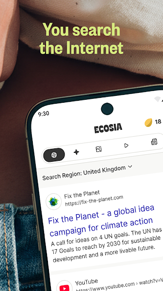
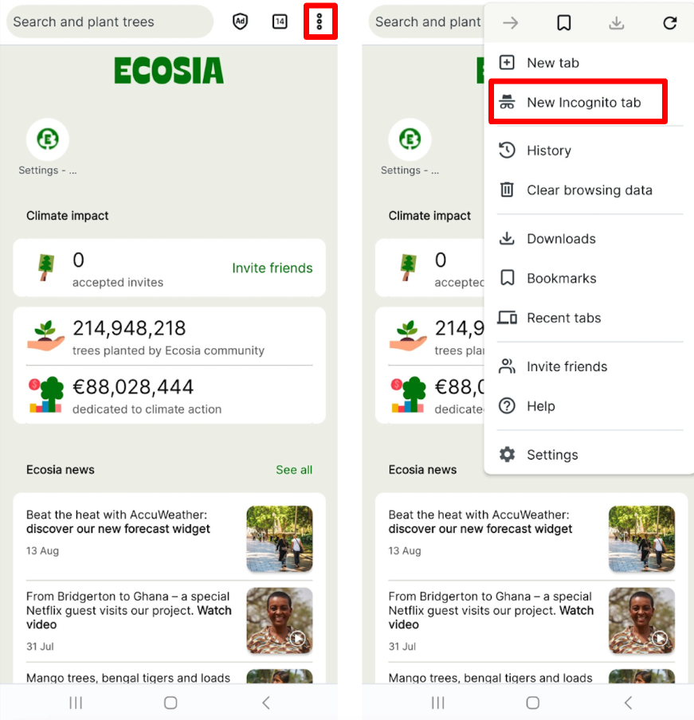

把 Ecosia 嵌进我的调研工作流：搜索、无痕、清理一条链
每周要做竞品调研和外文资料收集，以前要 Chrome 搜 + 翻译切应用 + 手动清 Cookie，现在把 Ecosia 当搜索入口，用它的无痕模式和内置翻译卡片省掉两次跳转。
旧流程的三个断点
我每周要做一轮竞品调研：搜外文行业报告、查产品文档、收集用户反馈。这套活以前跑三步——Chrome 开一堆标签页、翻译外文页要切到 Google 翻译应用、结束后手动清 Cookie 怕痕迹留太多。
三个断点让这套流程一直卡着：一是外文查询的翻译，Chrome 自带翻译但偶尔失效，我得复制句子跳到翻译应用，回来再粘贴；二是调研里查竞品敏感词的时候，普通浏览历史会留下痕迹，事后要手动进设置删；三是书签越积越多，Chrome 的书签管理器本身就是个重灾区。
新流程：Ecosia 插进搜索入口那一环
换 ecosia官网 不是"换个搜索引擎"这么简单——它解决的是上面三个断点里的两个半。我的新流程链是：
搜索入口（Ecosia）→ 无痕标签（敏感查询）→ 翻译卡片（外文结果）→ 浏览数据清理（收尾）
具体怎么接的：
- 第一步全部用 下载 拿到的 Ecosia：不管是查中文资料还是外文调研，搜索框直接用。界面跟随系统语言，我手机是中文系统，应用就是中文界面，不用单独改设置
- 敏感查询直接开无痕标签：竞品名、竞品产品词这类查询，新开的标签选无痕模式——关掉标签自动清数据，不用我事后跑清理
- 外文结果的翻译：搜索框里直接打"XX 用英语怎么说"或者"XX 翻译成中文"，结果页顶部出翻译卡片，左边原词右边译文，点按钮跳完整翻译工具。不用切应用
- 收尾清理：普通标签里的浏览历史攒一周，周日点三点菜单→清除浏览数据→时间范围选"最近一周"，只勾缓存图片和文件，一秒搞定

实操里最容易断的两个环节
这套流程跑了两周，有两个地方一开始经常卡。
无痕标签容易忘关：我调研中途有时候接个电话或者切去微信，回来就忘了哪些标签是无痕开的。现在养成的习惯是——每次开无痕标签时，标签页右上角有个很明显的标识，扫一眼就知道。真忘关了也不要紧，Ecosia 的无痕标签不会存历史，关掉就自动清，只是中间如果还开着就等于白开了。
翻译卡片不出现：一开始打一些长句查询，翻译卡片没出来。后来去 ecosia文档 看了一下说要让查询更明确——"中文 翻译 英语"或者"XX 是什么意思"比单纯输入句子触发率高。卡片出来后，右边有个按钮跳完整翻译工具，整篇网页要翻的话，点过去在工具里粘贴原文就行，比自己手动复制两次强。

效果和边界
效果用数字说：以前每次调研结束要切两次应用（翻译 + 清理），现在一次都不用切——翻译卡片在结果页直接给，无痕标签关掉自动清。每周省的就是那五分钟手动跳转的时间。
但这套流程有几个边界值得提前知道。Ecosia 的账号不同步书签和历史，我换手机时书签得用 HTML 导出再导入，这一点没做好心理准备的话迁移那天会慌。官方的设计逻辑是它不做跨平台画像，账号只管影响力档案和 AI 记录——搜索种的树、收集的种子这些跟账号走，浏览数据还是留在设备本地。
另外它的网页整页翻译目前没有独立的一键按钮，安卓版还是靠翻译卡片变通。如果你需要频繁整页翻，得配合系统级翻译或者把文本复制到翻译工具。还有 Cookie 清除是一刀切的——点清除浏览数据时勾了 Cookie，所有网站的登录状态都会失效，包括你平时登的邮箱和网盘。我的做法是只勾缓存释放空间，Cookie 每周清一次前先确认关键网站的密码记牢了。
隐私层面的口径我挺喜欢——三句话：只收集必要数据、不出售个人数据、不跨平台画像。不是匿名工具，但比数据生意型巨头克制得多。调研里碰到敏感查询直接开无痕，普通查询正常搜就行。